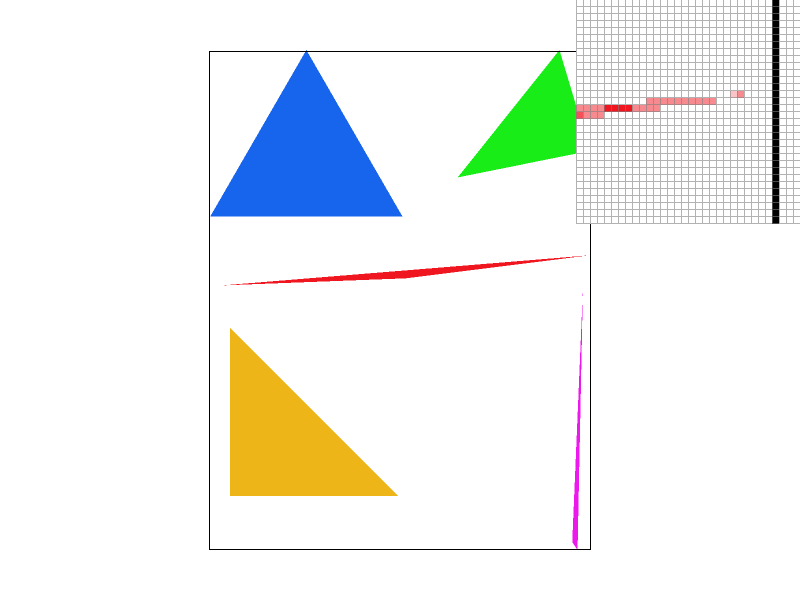

Overview
I implemented triangle rasterization, transforms and different approaches of sampling in this homework. As a whole, I’ve built a tiny renderer for svg files—I can render triangles to simulate every image, transform the image and render it under different sample rates or sample methods. Through this homework, I’ve explored key aspects of computer graphics that are not only essential and fundamental for rendering 2D scenes, but also a base for rendering 3D scenes.
Section I: Rasterization
Part 1: Rasterizing single-color triangles
My algorithm first finds the minimum and maximum of x, y, and use these to set up a bound. Then take sample within the bound, check if the center of the pixel(x+.5f, y+.5f) is in the triangle by line testing(if all discriminants are <=0 or >=0, the point is inside the triangle). Notice if x or y passes the boundary of the screen, perform cutoff.
|
|
|
Part 2: Antialiasing triangles
First, the image is rendered at a higher resolution. Given the sample rate, the size of the sample buffer is multiplied by the sample rate, which means each pixel in the final image is represented by #sample-rate samples. Then sample from this high-resolution image, picking the points that are inside the triangle. After that, the image is downsampled to the display resolution. The colour of each pixel is calculated by averaging the colours of those samples from the high-resolution image. No special data structure is used. By rendering the triangle in supersampled space, each edge of the triangle is evaluated against a greater number of points. And each final pixel displayed is calculated taking #sample-rate samples into consideration. Its colour at edges is more detailed and smoothed but not binarized, which gives people an illusion that the triangle is of higher resolution—even if the resolution is the same. At each stage of the pipeline, I modified it so that it could process sample rate that is greater than 1. Also, I decided not to use fill_pixel() for the rasterization of triangle and made it simply work for lines and dots. The triangle is dealt a little bit differently. To make it plainer, I separated my code for Task 1 and Task 2, even though the code in Task 2 can fully cover the function of that in Task 1. With supersampling, the edges of triangles are smoothed. So this method can antialias the triangles.
|
|

|
|
At a very sharp angle of the triangle, in the case of sample rate=1, the angle is rendered binarily—a pixel is either totally red or totally white. In the case of sample rate=4, the angle is rendered smoother. There are many gradient colours between pure red and pure white. In the case of sample rate=16, the image is even smoother. This is because with higher sample rate, more actual points that should exist is taken into consideration, giving a more realistic image.
Part 3: Transforms
The cubeman is waving while walking.
|
|
Extra Task
I use key ‘Q’ and ‘E’ to rotate the viewpoint. I added a DrawRend::rotate_view(float angle) function in drawend.cpp to rotate the viewpoint, and I also modified move_view() to keep the viewpoint rotated after zooming and translating. In detail, I first translate the viewpoint to the centre of the image and then rotate it. After that I translate it back, so I can get a image that is rotated around the centre of the image.
|
|
Section II: Sampling
Part 4: Barycentric coordinates
Barycentric coordinates offer a way for linear interpolation. In barycentric coordinates, every point is represented by the three vertices of the triangle. There are three weights α, β, γ, each means the influence that vertex have on the point, and the influence is linear. The sum of α, β and γ is 1, which ensures that the point is inside the triangle. In other words, the vector pointing to the point is represented by three vectors that each points to a vertex of the triangle. In this way, the colour at every point inside the triangle is calculated by linear process, which means colours at the vertices are mixed smoothly.
|
|
Image Display
|
|
Part 5: "Pixel sampling" for texture mapping
Pixel sampling refers to the process of selecting colour values from a texture and applying them to fill a shape that is drawn on the screen. I convert the coordinates in texture into barycentric coordinates in the triangle, and then use nearest sampling or bilinear sampling to sample from the texture. By barycentric interpolation, the colours of the triangle are properly calculated and filled. For nearest sampling, I rounded the floating-point texture coordinates to the nearest integer values to find the closest pixel, then used that texel's colour. For bilinear sampling, I identified the four texels surrounding the texture coordinate, calculated the fractional part of the texture coordinates to determine the proximity to each texel, and then performed a linear interpolation to calculate the final colour.
|
|
|

|
|
When applying nearest sampling, the image is sharper. When applying bilinear sampling, the image is smoother and more realistic. As sample rate increases, both images go smoother and more realistic. Supersampling helps nearest to perform much better, while only help bilinear to improve a little. So when sample rate=1, the difference between nearest and bilinear is the greatest, while when sample rate=16, there’s no noticeable difference. That’s because bilinear sampling has already smoothed the image a bit by taking adjunct pixels into consideration, so supersampling does not improve that much.
Part 6: "Level sampling" with mipmaps for texture mapping
Level sampling refers to the process of selecting proper levels of detail for different part of the texture when rendering a textured surface. Firstly, a set of smaller textures, known as mipmaps, is computed. Each mipmap is of lower resolution, used to render surface that is far away. Then, according to the extent of stretch in the image, which is measured by the magnitude of gradients, different levels of mipmaps are used to render the surface.
Sampling Method Comparation
Speed
Pixel sampling is the fastest. Level sampling can be fast for nearest sampling, but slower for linear sampling. Supersampling goes slower as sample rate increases.
Memory Usage
Pixel sampling has the lowest memory cost. Level sampling requires higher memory storage, as it has to store additional mipmaps. Supersampling requires more memory as it needs to store multiple samples for one pixel.
Antialiasing Power
Pixel sampling has the worst antialiasing power. Level sampling has good power, but it still can make image blurry. Supersampling has the best antialiasing power as it goes through multiple samples.
Image Display
|
|
|
|
|
Section III: Art Competition
It's a triangle world! Refering to https://github.com/fogleman/primitive, I found it interesting to generate such images that have a painterly quality! Translucent triangles are just like brushstrokes, and it finally gives an image looks like an Impressionist painting!
Part 7: Draw something interesting!
I used the programme provided in the GitHub Page to generate a series of svg files. And then I modify the svg files so that they could be interpreted by my renderer correctly. After that I made some screenshots and used them to generate an animation to be displayed on the webpage.
svg files can be found in /svg/art/.., and screenshots can be find in /image/animation/... in webpage resources.
|
|